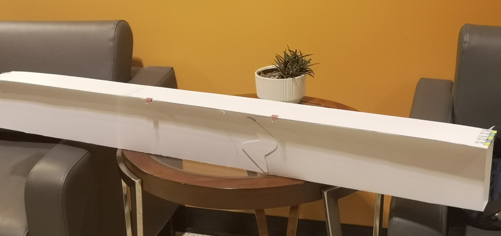

CIV 102 Bridge Design Project
Who: Team of 3
What: Construct a Matboard bridge
When: Nov 2024
Where: University of Toronto
Why: CIV 102
In the CIV 102 course in first year, I worked in a team of 3 to apply our course knowledge towards designing and constructing a bridge using a 32" x 40" x 0.05" sheet of Matboard and 2 tubes of concrete cement. Through this project, I applied the MATLAB skills I learned in our linear algebra course to digitally calculate the stress and strain under bending for variations of our bridge design. This allowed us to iterate over multiple design concepts by testing various dimensions before constructing our final bridge. This project taught me adaptabiity, teamwork, and perseverance due to the various unexpected challenges that arise during construction.